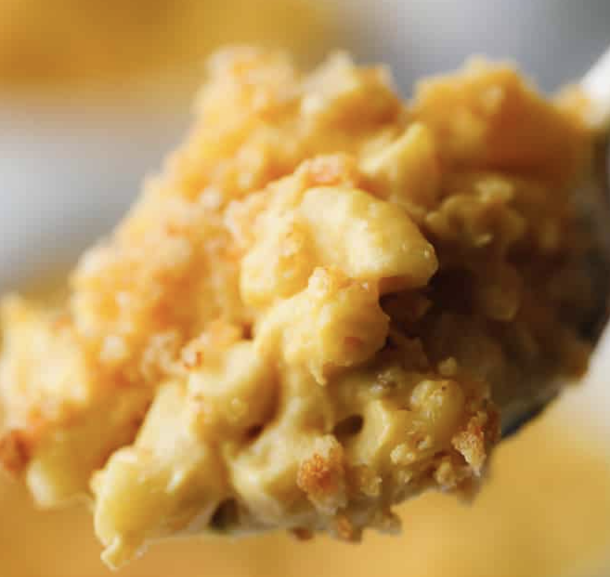

Vegan Macaroni

Description
This recipe will make a scrumptious, cheesy, and heartwarning vegan mac and cheese!
Ingredients
- 1 1/2 cups raw cashews
- 2 cups water
- 3 tablespoons fresh lemon juice
- 1/2 cup nutritional yeast
- 1/4 teaspoon turmeric
- 1/2 teaspoon garlic powder
- 1 1/2 teaspoons salt
- 1 (7-oz) bag shredded vegan cheddar cheese, optional
- 12 ounces elbow pasta
Steps
- Preheat oven and prep: If planning on baking it with the breadcrumb topping, preheat the oven to 350 degrees F and lightly grease a casserole dish (I used a 9×13 inch dish). Skip this step for stovetop mac and cheese.
- Soak the cashews: Soften your cashews by covering them in boiling water for 5 minutes. I do this by heating up water in my tea kettle, and then pouring the boiling water over the cashews in a large glass measuring cup.
- Cook pasta: Cook the pasta according to package instructions, but do not overcook. Drain and set aside.
- Blend cheese sauce: Drain the soaked cashews and discard the soaking water. Add the cashews, 2 cups fresh water, lemon juice, nutritional yeast, turmeric, garlic powder, salt and bag of shredded cheese (if using) to a high powered blender and blend until very smooth.